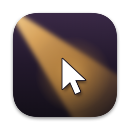
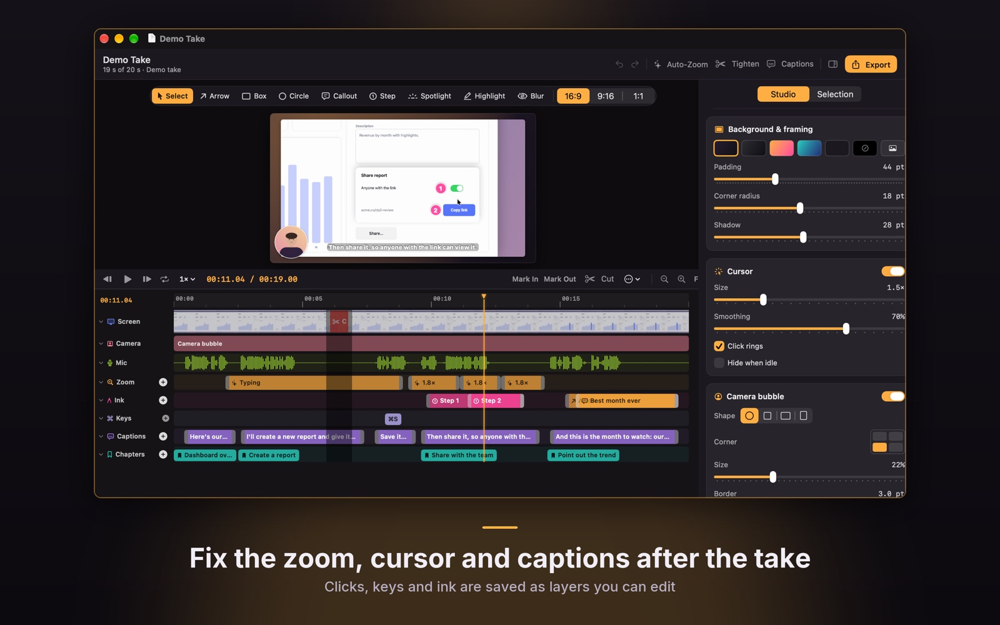
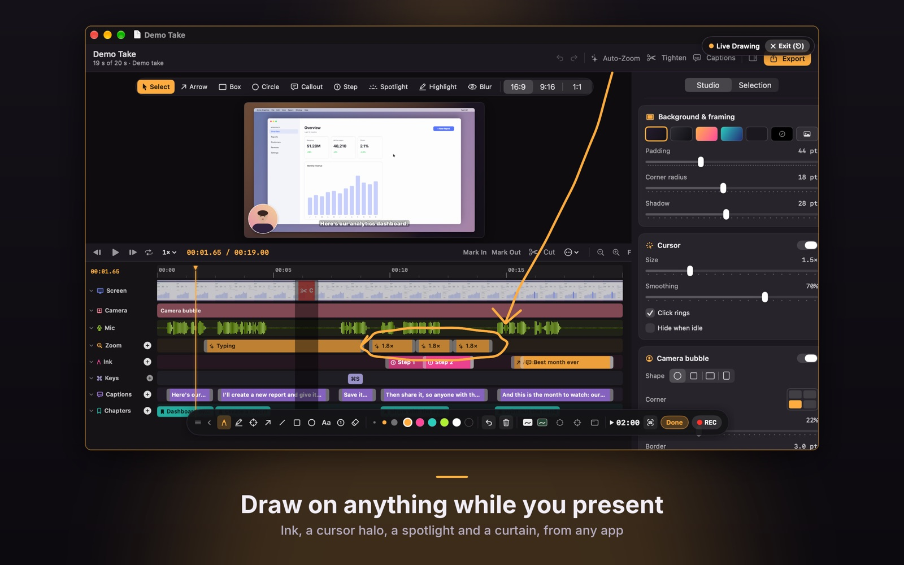
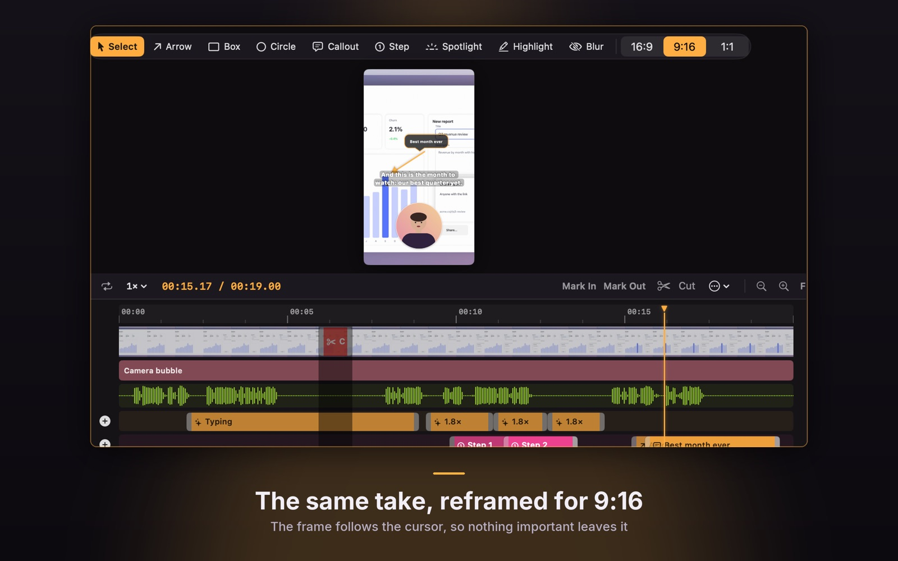
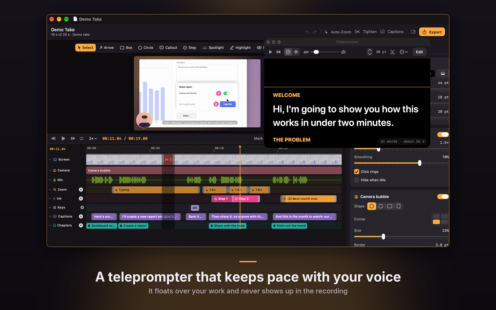
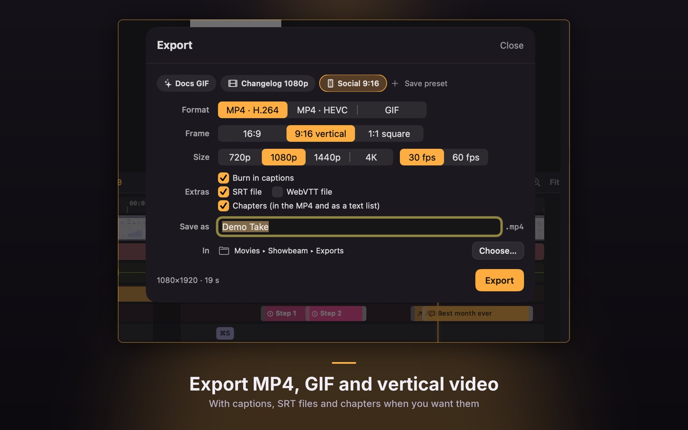

Draw on your screen while you present, or record a demo and fix the zoom, cursor and captions afterwards. Everything stays on your Mac.
Present live with ink and a spotlight, or record a take whose clicks, keys and drawings stay editable.
For presenting, in any app.
For demos you want to get right.
Real screens from the app, with its built-in demo take.





All of Live mode, takes up to 5 minutes, the editor's cuts, speed, auto-zoom, cursor and framing, and 1080p MP4 export without a watermark.
A one-time purchase. Unlimited takes, the webcam, keystrokes, the teleprompter, captions, Tighten, chapters, 4K and 60 fps, GIF and vertical export.
Everything in Showbeam Full, free for 14 days. Afterwards the free limits apply again, and your projects stay.
Need help? Email wekstuff@gmail.com. Tell us your macOS version and what you were doing, and attach a screenshot if you can.
Live mode, the editor, the demo take and exports of existing takes all work without this permission.
Takes are saved in ~/Movies/Showbeam, one .showbeam file per take. Exports go to ~/Movies/Showbeam/Exports unless you choose another folder. In the Library, Show in Finder opens the folder.
Press ⌃⌥D from any app to start drawing, and esc to stop. You can change every shortcut in Settings ▸ Shortcuts. The rehearsal (Help ▸ Run the Rehearsal Again) walks you through it.
Turn on Keys when you start a take. macOS asks for Input Monitoring the first time. Keys are read only while a take records, only shortcuts unless you choose all keys, and never while a password field has focus.
Captions use Apple's on-device speech recognition. The first time, macOS may need to download a speech model for your language; Showbeam asks before it does.
Settings ▸ Purchases ▸ Restore Purchases, signed in with the Apple Account you bought with.
Delete takes from the Library or the Finder. Moving Showbeam to the Trash removes the app; your takes stay in ~/Movies/Showbeam until you delete them.
Showbeam has no account and no network access, and everything stays on your Mac. Read the privacy policy.